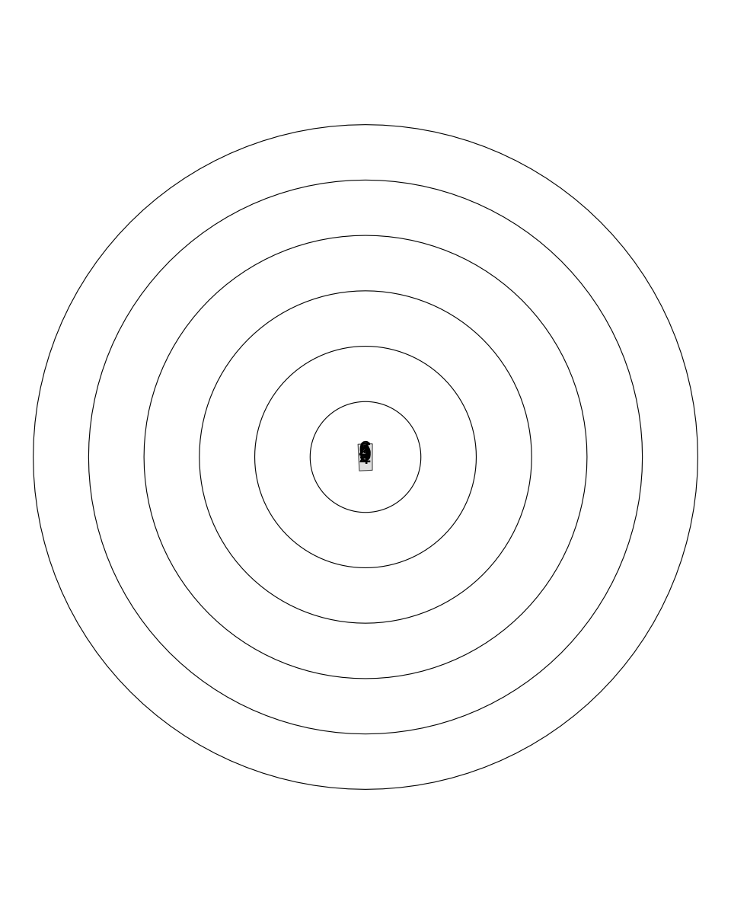
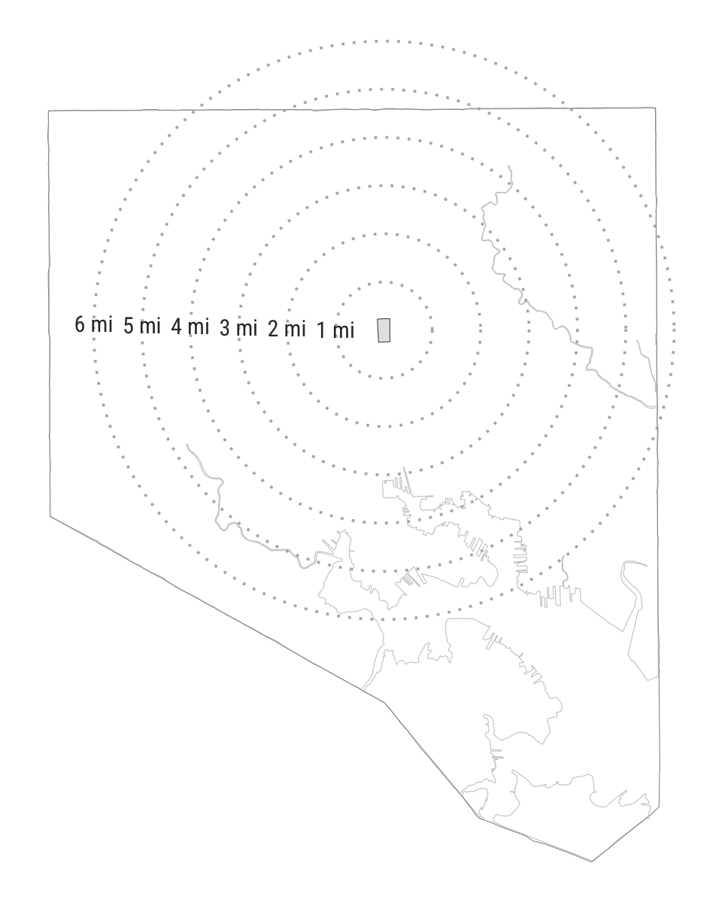
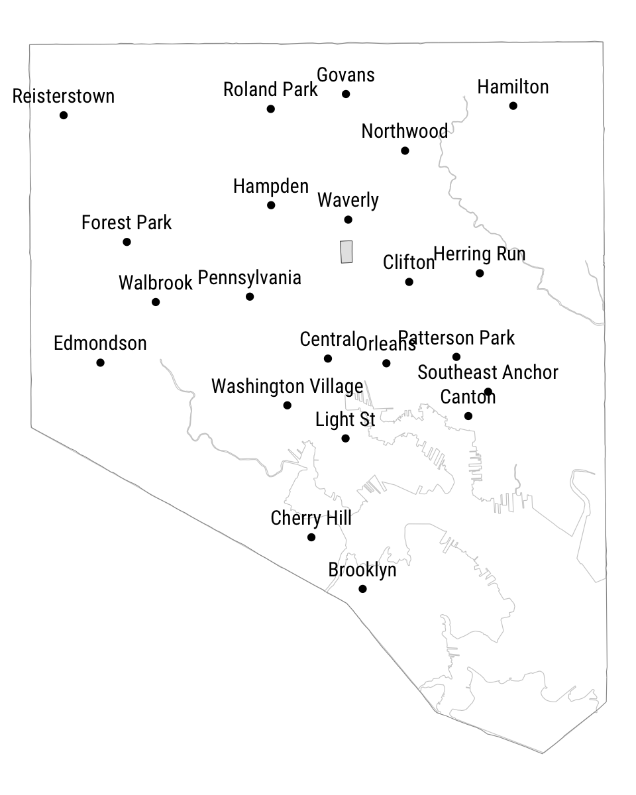
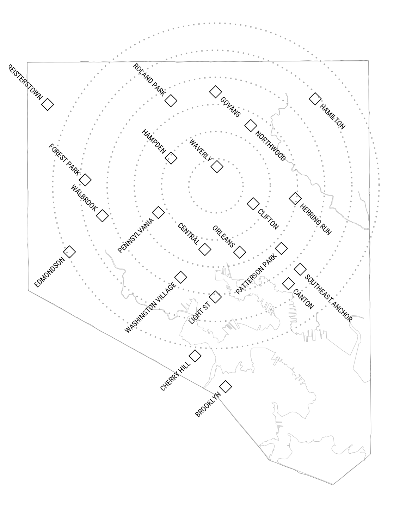

![]()
library(ggplot2)
library(dplyr)
library(mapbaltimore)The Enoch Pratt Free Library—Baltimore’s public library system—recently reopened for in-person browsing for the first time in nearly a year. This past Sunday, I visited the Enoch Pratt’s Clifton branch for the first time and I really enjoyed the novelty of exploring a new library after so many months away from any library at all. My ten-year-old daughter shared my excitement so we started talking about the idea of visiting every public library in the city this spring and summer.

When we made it back home, I decided to make a simple map we could use to keep track of the libraries as we go. We usually ride our bikes when we visit the library so I also wanted to show the distance between each library and our neighborhood. The map is simple but I’m happy with how it turned out so I wanted to write up the approach. It shows off a few ways to handle label placement but I’m really hoping it might entice a few neighbors into visiting a few more libraries this spring as well.
To start, I loaded ggplot2 and dplyr packages, and my own mapbaltimore package. I’m also using a couple functions from sf, purrr, and stringr.
Next, I pulled in the boundary of the Harwood neighborhood where I live, found the center of the neighborhood using the st_centroid function, and applied a buffer ranging from one to six miles. Including the approximate mileage is especially helpful since I’m hoping we can bike to most (if not all) of these libraries before the summer heat sets in.
# Get center of area
area <- get_area("neighborhood", "Harwood")
center <- sf::st_centroid(area)Warning: st_centroid assumes attributes are constant over geometries# Define buffers ranging from 1 to 6 miles
miles <- seq(6)
# Convert miles to meters
meters <- miles * 1609.344
area_dist <- purrr::map_dfr(
meters,
~ buffer_area(center, dist = .x)
)Warning: `buffer_area()` was deprecated in mapbaltimore 0.1.2.
ℹ Please use `sfext::st_buffer_ext()` instead.Unfortunately, if I try to label the buffered areas it doesn’t work very well. All of the labels overlap at the center of the area.
theme_set(theme_void() + theme(plot.margin = margin(0)))
ggplot() +
geom_sf(data = area) +
geom_sf(data = area_dist, fill = NA, color = "black") +
geom_sf_text(data = bind_cols(area_dist, dist = miles), aes(label = dist))
To avoid this issue, I can use the clip_area function from mapbaltimore to return a five meter edge along the left side of each of the buffered areas.
# Clip buffered areas
area_label <- purrr::map_dfr(
meters,
~ buffer_area(center, dist = .x) %>%
clip_area(clip = "right", edge_dist = 5) %>%
bind_cols(label = paste0(.x / 1609.344, " mi"))
)We can take a quick look at how these elements come together. I set the already set theme to theme_void() but I updated the defaults for geom_text, created a background layer (layer_city) that combines the detailed physical boundary of the city (baltimore_city_detailed) with the simple administrative boundary (baltimore_city), and created layers for the buffered areas and labels.
# Set family and size for text labels
update_geom_defaults("text", list(family = "Roboto Condensed", size = 4))
layer_city <- list(
geom_sf(data = baltimore_city_detailed, fill = NA, color = "gray80"),
geom_sf(data = baltimore_city, fill = NA, color = "gray60")
)
layer_dist <- geom_sf(data = area_dist, fill = NA, color = "gray70", linetype = "dotted", linewidth = 0.65)
layer_label <- geom_sf_text(data = area_label, aes(label = label), color = "gray20")
ggplot() +
layer_city +
geom_sf(data = area) +
layer_dist +
layer_label
For the next step, we need the locations for the libraries. Open Baltimore provides access to a GeoJSON file with the location of the Central Library and all of the branches which I can quickly import using the read_sf function.
libraries_path <- "https://gisdata.baltimorecity.gov/egis/rest/services/OpenBaltimore/Library/FeatureServer/0"
libraries <- sfext::read_sf_esri(libraries_path) %>%
janitor::clean_names("snake") %>%
sf::st_transform(2804)It looks fine but the label placement is a bit tricky—especially in the city’s dense southeast Baltimore neighborhoods there are a few libraries very close together.
libraries %>%
ggplot() +
layer_city +
geom_sf() +
geom_sf_text(aes(label = name), nudge_y = 550) +
geom_sf(data = area)
To avoid these overlapping labels and try out a more distinctive style, I decided to divide up the libraries into three groups—libraries in east and northeast Baltimore (mostly), libraries in north and northwest Baltimore (mostly), and libraries everywhere else.
libraries_e <- libraries %>%
filter(name %in% c("Southeast Anchor", "Canton", "Herring Run", "Hamilton", "Northwood", "Clifton", "Govans"))
libraries_nw <- libraries %>%
filter(name %in% c("Central", "Waverly", "Forest Park", "Reisterstown", "Orleans", "Roland Park", "Hampden", "Walbrook"))
libraries_s <- libraries %>%
filter(!(name %in% c(libraries_nw$name, libraries_e$name)))I should be clear that figuring out which library belonged in which group took a bit of trial and error. I’m using the hjust parameter to left align the text for libraries in northeast and east Baltimore then right align everything else and I’m using the angle, nudge_x, and nudge_y parameters to push the text to the appropriate side of the diamond shape I used to mark each library location.
# Use geom_sf_text to make each group of libraries into a separate layer
nudge <- 275
# Reduce the text size
update_geom_defaults("text", list(size = 2.75))
layer_libraries_e <- geom_sf_text(
data = libraries_e,
aes(label = stringr::str_to_upper(name)),
nudge_x = nudge, nudge_y = nudge * -1, angle = -45, hjust = 0
)
layer_libraries_nw <- geom_sf_text(
data = libraries_nw,
aes(label = stringr::str_to_upper(name)),
nudge_x = nudge * -1, nudge_y = nudge, angle = -45, hjust = 1
)
layer_libraries_s <- geom_sf_text(
data = libraries_s,
aes(label = stringr::str_to_upper(name)),
nudge_x = nudge * -1, nudge_y = nudge * -1, angle = 45, hjust = 1
)
ggplot() +
# Add labels
layer_city +
layer_dist +
layer_libraries_e +
layer_libraries_nw +
layer_libraries_s +
geom_sf(data = libraries, shape = 5, size = 4)
I exported the finished map with ggsave, printed it out, and checked off the two libraries we’ve visited so far. This morning, my daughter circled one more. She had mentioned our new map to her math teacher and, after her teacher told her which branch she usually uses and gave it a good review, my daughter started making a plan for us to visit this weekend. I can’t wait.
Reuse
Citation
BibTeX citation:
@online{pousson2021,
author = {Pousson, Eli},
title = {Making a Map of Libraries Around My Neighborhood},
date = {2021-03-23},
url = {https://elipousson.github.io/posts/2021-03-23-mapping-libraries-near-me},
langid = {en}
}
For attribution, please cite this work as:
Pousson, Eli. 2021. “Making a Map of Libraries Around My
Neighborhood.” March 23, 2021. https://elipousson.github.io/posts/2021-03-23-mapping-libraries-near-me.